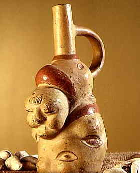
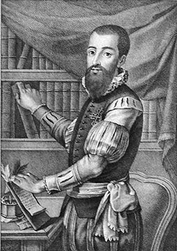

Présentation

La patate, ou pomme de terre, est un tubercule comestible produit par l’espèce Solanum tuberosum, appartenant à la famille des solanacées. Le terme désigne également la plante elle-même, plante herbacée, vivace par ses tubercules mais toujours cultivée comme une culture annuelle. La pomme de terre est une plante qui réussit dans la plupart des sols, mais elle préfère les sols légers légèrement acides. La plante est sujette aux maladies dans des sols calcaires ou manquant d’humus.
La pomme de terre est originaire de la cordillère des Andes (Pérou), dans le sud-ouest de l’Amérique du Sud où son utilisation remonte à environ 8 000 ans. Introduite en Europe vers la fin du XVIe siècle à la suite de la découverte de l’Amérique par les conquistadors espagnols, elle s’est rapidement diffusée dans le monde et est en 2015 cultivée dans plus de 150 pays sous pratiquement toutes les latitudes habitées.
En fonction de son mode de cuisson, elle est une source importante de glucides, qui se présentent principalement sous forme de fécule, et selon son mode de cuisson elle peut apporter des quantités notables de protéines et de vitamines. Ses qualités nutritives et sa facilité de culture font qu’elle est devenue l’un des aliments de base de l’humanité : elle figure parmi les légumes et féculents les plus consommés et est la principale denrée alimentaire non céréalière du monde. Cultivée et consommée localement, relativement peu commercialisée sur le marché mondial, elle est recommandée par l’ONU pour atteindre la sécurité alimentaire.
C’est aussi la culture alimentaire la plus productive, produisant plus de matière sèche à l’hectare que les céréales ; 85 % de la matière sèche produite par la plante est comestible pour l’homme contre environ 50 % pour les céréales.
Histoire
Origines

La pomme de terre est originaire des Andes où elle a été domestiquée et cultivée depuis l'époque néolithique dans la zone côtière de l'actuel Pérou, à la fin de la dernière période glaciaire alors que l'Altiplano était encore en partie recouvert par les glaces. Dans les grottes de Tres Ventanas situées à 2 800 mètres d'altitude dans le canyon Chilca à 65 km au sud-est de Lima, ont été mis au jour les plus anciens restes de tubercules de pommes de terre cultivées datant de environ 8000 av. J.-C.. On y a aussi découvert des spécimens de haricot, haricot de Lima, piment, oca et ulluque. Des découvertes similaires ont été faites sur des sites archéologiques situés le long de la côte péruvienne, depuis Huaynuma dans la vallée de Casma6 (région d'Ancash, à 360 km au nord de Lima), jusqu'à La Centinela dans la vallée de Chincha située à 200 km au sud de Lima.
Un spécimen de Solanum maglia, espèce de pomme de terre sauvage, datant de 13000 av. J.-C., a été identifié sur le site archéologique de Monte Verde, près de Puerto Montt dans le sud du Chili. Surement consommée mais non cultivée, elle est la plus ancienne espèce connue ayant pu servir à l'alimentation humaine. Cette découverte tend à confirmer cette région comme étant le berceau de la pomme de terre.
Après une longue période d'appropriation, alors que la région côtière connaissait un climat de plus en plus aride, c'est sur l'Altiplano, autour du lac Titicaca, chez les Tiwanaku que la domestication de la pomme de terre a vu son premier accomplissement, par la rationalisation d'un processus de détoxification permettant de faire baisser les taux de glycoalcaloïdes présents naturellement dans la plante, notamment celui de l’α-solanine, toxique pour l'homme et présente en grande quantité quand le tubercule se développe en altitude : les glycoalcaloïdes lui permettant de résister au gel. C'est en perfectionnant vers 1500 av. J.-C. ces techniques de conservation, mises en pratique depuis plus de 4 000 ans par les peuples de l'Altiplano et consistant en une suite d'opérations de lessivage, de séchage au soleil puis de congélation dans la glace, que les agriculteurs Tiwanaku sont parvenus à cette rationalisation : le lessivage et le séchage faisant baisser les taux de solanine, et la cuisson des pommes de terre congelées ceux des inhibiteurs de protéinase et lectines nuisibles à sa digestion par l'homme et les animaux8. Les Quechuas pratiquent encore de nos jours des techniques de conservation de la pomme de terre similaires, le Chuño, aux propriétés également détoxifiantes.
C'est aussi dans les Andes, que l'on observe encore aujourd'hui la plus grande variabilité génétique des espèces et variétés de solanées tubéreuses, avec plus de cent espèces sauvages et plus de 400 variétés indigènes de pommes de terre cultivées.
Les poteries ayant pour thème la pomme de terre, découvertes dans la région, témoignent de l'importance qu'a pu revêtir sa domestication pour les cultures qui s'y sont succédé. Ces poteries, qui s'échelonnent du IIe siècle au XVIe siècle, de l'ère Nazca à la fin de l'ère Inca, figurent les tubercules de manière très réaliste, puis celles-ci évoluent jusqu'à prendre la forme de créatures humaines ou animales, sur lesquelles sont toujours représentés les « yeux » des pommes de terre de façon de plus en plus stylisée.
Au sud du Pérou, à Cuzco, à l'arrivée des Espagnols qui ravagèrent la ville en 1534, la plantation des papas faisait l'objet d'une cérémonie rituelle. Les grands prêtres du temple du Soleil en ordonnaient la plantation, au commencement de la saison des pluies, lorsque les premières pousses de maïs, semés en septembre, atteignaient un centimètre. Les hommes creusaient le sol avec la chaquitaclla, outil agricole encore en usage aujourd'hui dans les Andes, et les femmes plantaient les semences. Au cours d'une cérémonie publique qui rassemblait toute la population : des lamas étaient sacrifiés pour s'attirer la bienveillance de Axomama, la déesse mère des pommes de terre très vénérée dans le panthéon des dieux incas. On y dansait et on y buvait de la chicha pour fêter l'arrivée de la pluie. Les papas étaient récoltées en juin.
Découverte par les Européens

À l'arrivée des Espagnols en Amérique du Sud, la pomme de terre était cultivée principalement dans l'empire Inca dont elle était l'un des aliments de base. Elle l'était également au nord de l'empire chez les Chibcha (actuelle Colombie), sous le nom de iomza, et au sud par les Mapuches (actuel Chili) qui la nommaient poñi.
Il est fort probable que Francisco Pizarro et ses hommes ont eu contact avec le tubercule et même mangé des pommes de terre lors de leur expédition au Pérou dès 1532. Toutefois il n'en existe aucune relation écrite.
Le chroniqueur espagnol Juan de Castellanos, arrivé en Colombie en 1544 où il meurt en 1607, narre dans ses Êlegías (1601, publiées à Madrid en 1886 dans Historia del Nuevo Reino de Granada (es)16) la découverte des pommes de terre faite en 1537. Il rapporte que celles-ci, qu'il appelle turmas (truffes), étaient cultivées chez les indiens Moscas (Chibchas) dans la région de Neiva (Colombie) : leur découverte a lieu au cours de l'expédition menée par Gonzalo Jiménez de Quesada à partir de 1535 en Colombie et qui aboutit à la fondation de Bogota le 6 août 1538.
Pedro de Cieza de León, qui voyagea en Colombie et au Pérou entre 1536 et 1551, signale la pomme de terre en 1553, sous le nom papa, dans Crónicas del Perú. Il y rapporte aussi la façon qu'ont les Indiens de la faire sécher au soleil pour la conserver et que le tubercule (qui ressemble à une « truffe de terre » : turma de tierra) une fois sec se nomme le chuño. («El principal mantenimiento dellos es papas, que son como turmas de tierra, y éstas las secan al sol y guardan de una cosecha para otra; y llaman a esta papa, después de estar seca, chuno»)
Une autre description de la papa est publiée en 1557 par Jérôme Cardan (Hieronymus Cardanus), un des plus illustres savants italiens du XVIe siècle, dans son De Rerum varietate. Il n'a jamais séjourné en Espagne et la pomme de terre est alors inconnue dans son pays. Sa description aura sans doute été inspirée par les Crónicas del Perú de Pedro de Cieza. « À Colla ou pays du Pérou, la papa est un genre de tubercule, utilisé pour faire du pain, il se développe dans le sol : c'est que partout la nature se soucie avec sagesse de toutes les nécessités. Les papas sont séchées et ensuite appelée ciuno. Certaines personnes ont trouvé le moyen d'en tirer des profits en transportant uniquement cette marchandise vers la province de Potosi. Ils disent que cette racine porte une plante similaire à celle de l'Argemone. Elles ont la forme de châtaignes, mais ont un goût plus agréable : elles sont consommées cuites ou transformées en farine. On les trouve aussi chez les autres peuples de cette Chersonèse, ainsi que parmi les habitants de la province de Quito. »
En 1589, le missionnaire et naturaliste José de Acosta, qui séjourna dans les Andes de 1569 à 1585, évoque la culture de la pomme de terre (papas) dans son ouvrage Historia natural y moral de las Indias (Livre quatrième, chapitre XVII). Il note la façon qu'ont les Indiens de la conserver (chuño) et il indique aussi que la pomme de terre sert à fabriquer une sorte de pain.